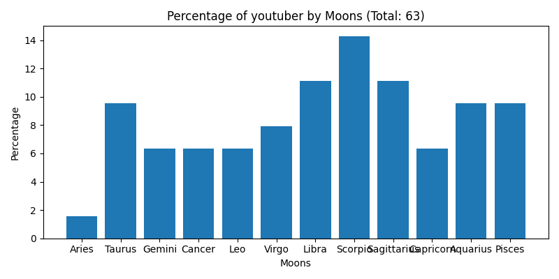
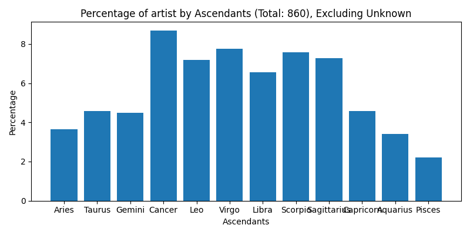
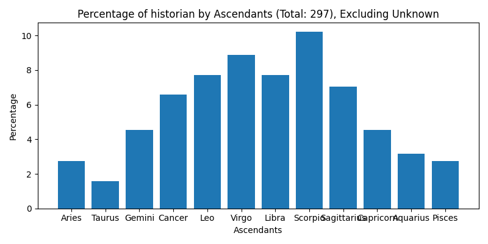
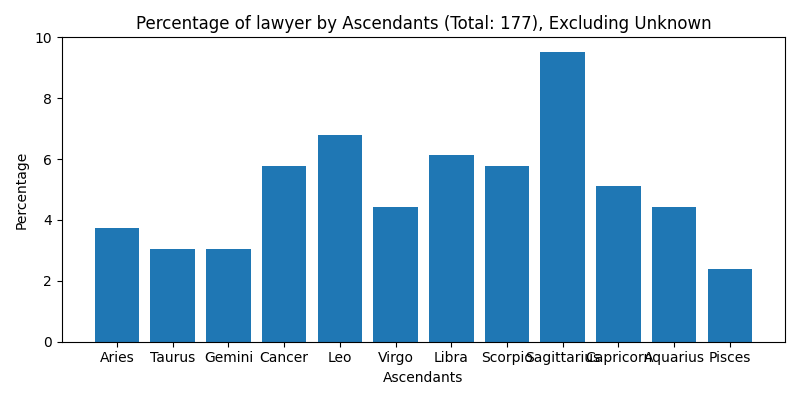
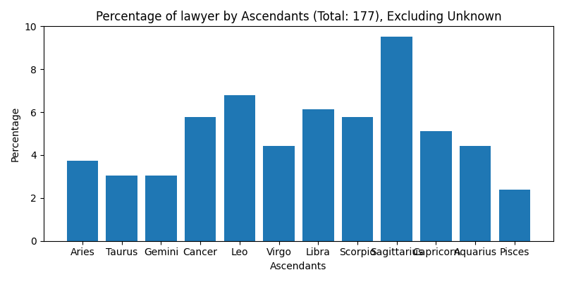

Estatística para Astrologia
Muitas vezes tenho ouvido que pessoas com determinado acendente tem mais propensão a seguirem tal atividade ou profissão. Com base nessas afirmações, eu resolvi fazer uma análise estatística e gerei alguns gráficos, agrupando pessoas com qualidades dos seus mapas em comum, nascidas em um determinado dia da semana entre outros. Como resultado podemos ver que em alguns casos realmente há uma probabilidade maior da pessoa seguir um determinado caminho, mas que em geral, pessoas de todos os signos, antecendentes e luas tem caminhos abertos para qualquer atividade ou profissão, bastanto para isso trabalho e posicionamento. Para essas análises eu usei o database da Astrotheme, acessivel gratuitamente através do link: https://www.astrotheme.com/birthdays/january-1.htm. Para mais detalhes, eu deixei o meu codigo python disponível no final dessa página- se usar, por favor verifique se ele está funcionando de acordo com a sua necessidade.
Estatísticas para comediante/ator
Estatísticas para autor/escritor
Estatísticas para cantor/músico
Estatísticas para youtuber
Estatísticas para atleta
Estatísticas para montanhista
Estatísticas para jogador
Estatísticas para artista

Estatísticas para espiritualista
Estatísticas para cientista
Estatísticas para inventor
Estatísticas para político
Estatísticas para historiador
Estatísticas para advogado
 

Estatísticas para jornalista
Estatísticas para evento mundial


Código Python para aquisição de dados
import requests
from bs4 import BeautifulSoup
import re
import pandas as pd
from datetime import datetime, timedelta
# Gerar todas as datas no formato 'month-day'
start_date = datetime.strptime('01-01', '%m-%d')
end_date = datetime.strptime('01-01', '%m-%d')
date_generated = [start_date + timedelta(days=x) for x in range(0, (end_date - start_date).days + 1)]
datas = [date.strftime('%B-%-d').lower() for date in date_generated]
for data in datas:
def verificar_acesso(url):
try:
response = requests.get(url)
if response.status_code == 200:
return response.content
else:
print(f"Erro ao acessar {url}: {response.status_code}")
return None
except requests.RequestException as e:
print(f"Erro de requisição: {e}")
return None
def coletar_dados_perfil(conteudo):
soup = BeautifulSoup(conteudo, 'html.parser')
perfis = soup.find_all('div', class_='headerFiche')
dados = []
primeiros_nomes = []
profissoes_lista = [
'actor', 'actress', 'comedian', 'dancer', 'humorist', 'musician', 'composer', 'singer', 'music-hall artist',
'politician', 'historian', 'lawyer', 'journalist', 'reporter', 'tv/radio host', 'youtuber',
'athlete', 'mountaineer', 'chess player', 'bridge player', 'author', 'novelist', 'writer',
'painter', 'sculptor', 'cartoonist', 'photographer', 'spiritualist', 'astrologer', 'occultist',
'scientist', 'inventor', 'architect', 'chronicler', 'commentator', 'world event'
]
us_states = {
'AL', 'AK', 'AZ', 'AR', 'CA', 'CO', 'CT', 'DE', 'FL', 'GA', 'HI', 'ID', 'IL', 'IN', 'IA', 'KS', 'KY', 'LA',
'ME', 'MD', 'MA', 'MI', 'MN', 'MS', 'MO', 'MT', 'NE', 'NV', 'NH', 'NJ', 'NM', 'NY', 'NC', 'ND', 'OH', 'OK',
'OR', 'PA', 'RI', 'SC', 'SD', 'TN', 'TX', 'UT', 'VT', 'VA', 'WA', 'WV', 'WI', 'WY'
}
for perfil in perfis:
try:
a_tag = perfil.find('a')
if a_tag and a_tag.contents and isinstance(a_tag.contents[0], str):
nome = a_tag.contents[0].strip()
if "Display" in nome:
nome = nome.split("Display")[0].strip()
primeiros_nomes.append(nome)
else:
nome = 'N/A'
fiche = perfil.find_next('table', class_='fiche')
if fiche:
# Capturando o signo (Sun)
sun_element = fiche.find('td', string=re.compile('Sun:'))
sun = sun_element.find_next_sibling('td').get_text(strip=True).split()[-1] if sun_element else 'N/A'
# Capturando o ascendente (AS)
ascendant_element = fiche.find('td', string=re.compile('AS:'))
ascendant = ascendant_element.find_next_sibling('td').get_text(strip=True).split()[-1] if ascendant_element else 'N/A'
# Capturando a lua (Moon)
moon_element = fiche.find('td', string=re.compile('Moon:'))
moon = moon_element.find_next_sibling('td').get_text(strip=True).split()[-1] if moon_element else 'N/A'
# Capturando o dia da semana, cidade e país de nascimento
born_element = fiche.find('td', string=re.compile('Born:|Event:'))
event_type = 'Born' if born_element and 'Born:' in born_element.get_text() else 'Event'
born_date = born_element.find_next_sibling('td').get_text(strip=True) if born_element else 'N/A'
born_in_element = fiche.find('td', string=re.compile('In:'))
born_in = born_in_element.find_next_sibling('td').get_text(strip=True) if born_in_element else 'N/A'
city, country = 'N/A', 'N/A'
if born_in != 'N/A':
if "(" in born_in and ")" in born_in:
city_country = born_in.split('(')
city = city_country[0].strip()
country = city_country[1].replace(')', '').strip()
else:
city_country = born_in.rsplit(' ', 1)
city = city_country[0].strip()
country = city_country[1].strip() if len(city_country) > 1 else 'N/A'
# Corrigindo valores de país
if re.match(r'\d+', country):
country = 'France'
if country in us_states:
country = 'United States'
if ',' in country:
country = country.split(',')[-1].strip()
# Capturando os dominantes
dominants_element = fiche.find('td', string=re.compile('Dominants:'))
dominants = dominants_element.find_next_sibling('td').get_text(" ", strip=True) if dominants_element else 'N/A'
# Capturando a numerologia
numerology_element = fiche.find('td', string=re.compile('Numerology:'))
numerology = numerology_element.find_next_sibling('td').get_text(strip=True) if numerology_element else 'N/A'
# Capturando casas e elementos
if dominants != 'N/A':
dominants_split = dominants.split('/')
houses = re.findall(r'\d+', dominants_split[0]) if len(dominants_split) > 0 else ['N/A']
elements = dominants_split[1].strip() if len(dominants_split) > 1 else 'N/A'
cardinal = dominants_split[2].strip() if len(dominants_split) > 2 else 'N/A'
else:
houses, elements, cardinal = ['N/A'], 'N/A', 'N/A'
else:
sun, ascendant, moon, born_date, city, country, dominants, numerology, houses, elements, cardinal = 'N/A', 'N/A', 'N/A', 'N/A', 'N/A', 'N/A', 'N/A', 'N/A', ['N/A'], 'N/A', 'N/A'
except AttributeError:
sun, ascendant, moon, born_date, city, country, dominants, numerology, houses, elements, cardinal = 'N/A', 'N/A', 'N/A', 'N/A', 'N/A', 'N/A', 'N/A', 'N/A', ['N/A'], 'N/A', 'N/A'
try:
if event_type == 'Born':
biografia_div = perfil.find_next('div', style="font-weight: bold; margin: 8px auto 3px").find_next('p')
if biografia_div:
biografia_texto = biografia_div.get_text().lower()
profissao = next((prof for prof in profissoes_lista if prof in biografia_texto), 'N/A')
else:
profissao = 'N/A'
else:
profissao = 'world event'
except AttributeError:
profissao = 'N/A'
dia, mes, ano, dia_semana = 'N/A', 'N/A', 'N/A', 'N/A'
if born_date != 'N/A':
try:
parts = born_date.split(',')
parts2 = data.split('-')
dia_semana = parts[0].strip()
dia, mes, ano = parts2[1], parts2[0].capitalize(), parts[2].strip()
except ValueError:
dia_semana, dia, mes, ano = 'N/A', 'N/A', 'N/A', 'N/A'
dados.append({
'Nome': nome,
'Signo': sun,
'Ascendente': ascendant,
'Lua': moon,
'Profissão': profissao,
'Dia da Semana': dia_semana,
'Dia': dia,
'Mês': mes,
'Ano': ano,
'Cidade': city,
'País': country,
'Dominantes': dominants,
'Casas': ', '.join(houses),
'Elementos': elements,
'Cardinal': cardinal,
'Numerologia': numerology
})
print(f"Nome: {nome}, Signo: {sun}, Ascendente: {ascendant}, Lua: {moon}, Profissão: {profissao}, Dia da Semana: {dia_semana}, Dia: {dia}, Mês: {mes}, Ano: {ano}, Cidade: {city}, País: {country}, Dominantes: {dominants}, Casas: {houses}, Elementos: {elements}, Cardinal: {cardinal}, Numerologia: {numerology}")
return dados, primeiros_nomes
def main():
base_url = f'https://www.astrotheme.com/birthdays/{data}/'
page_number = 1
all_dados = []
visited_first_names = set()
while True:
url = f'{base_url}{page_number}.htm'
conteudo = verificar_acesso(url)
if conteudo:
dados_pagina, primeiros_nomes = coletar_dados_perfil(conteudo)
if not dados_pagina or (primeiros_nomes and primeiros_nomes[0] in visited_first_names): # Se não houver perfis ou o primeiro nome se repetir, parar a execução
break
visited_first_names.add(primeiros_nomes[0])
all_dados.extend(dados_pagina)
page_number += 1
else:
break
# Salvar dados em um DataFrame pandas
colunas = ['Nome', 'Signo', 'Ascendente', 'Lua', 'Profissão', 'Dia da Semana', 'Dia', 'Mês', 'Ano', 'Cidade', 'País', 'Dominantes', 'Casas', 'Elementos', 'Cardinal', 'Numerologia']
df = pd.DataFrame(all_dados, columns=colunas)
df.to_csv(f'celebridades_{data}.csv', index=False)
print(f"Total de perfis coletados: {len(all_dados)}")
return df
if __name__ == '__main__':
df_celebridades = main()
Código Python para geração dos plots
import pandas as pd
import matplotlib.pyplot as plt
# Caminho do arquivo total.csv
file_path = '/Users/smx/Desktop/estatisticas/total.csv'
# Ler o arquivo CSV em um DataFrame
df = pd.read_csv(file_path)
# Verificar as primeiras linhas do DataFrame para entender a estrutura
print(df.head())
# Verificar quais colunas estão disponíveis
print(df.columns)
# Função para agrupar profissões similares
def agrupar_profissoes(profissao):
if profissao in ['actor', 'actress', 'comedian']:
return 'actor/comedian'
elif profissao in ['author', 'writer', 'novelist']:
return 'author/writer'
elif profissao in ['singer', 'musician', 'composer']:
return 'singer/musician'
elif profissao == 'tv/radio host':
return 'tv/radio host'
elif profissao == 'youtuber':
return 'youtuber'
elif profissao == 'athlete':
return 'athlete'
elif profissao == 'mountaineer':
return 'mountaineer'
elif profissao == 'chess player':
return 'chess player'
elif profissao == 'bridge player':
return 'bridge player'
elif profissao in ['painter', 'sculptor', 'cartoonist', 'photographer']:
return 'artist'
elif profissao in ['spiritualist', 'astrologer', 'occultist']:
return 'spiritualist'
elif profissao == 'scientist':
return 'scientist'
elif profissao == 'inventor':
return 'inventor'
elif profissao == 'architect':
return 'architect'
elif profissao in ['chronicler', 'commentator']:
return 'commentator'
elif profissao == 'world event':
return 'world event'
elif profissao == 'politician':
return 'politician'
elif profissao == 'historian':
return 'historian'
elif profissao == 'lawyer':
return 'lawyer'
elif profissao == 'journalist':
return 'journalist'
else:
return 'other'
# Aplicar a função de agrupamento de profissões
df['Profissão Agrupada'] = df['Profissão'].apply(agrupar_profissoes)
# Contar a frequência de cada profissão agrupada
profession_counts = df['Profissão Agrupada'].value_counts()
# Criar o histograma
plt.figure(figsize=(10, 6))
profession_counts.plot(kind='bar')
plt.xlabel('Profissões Agrupadas')
plt.ylabel('Frequência')
plt.title('Histograma das Profissões Agrupadas')
plt.xticks(rotation=90)
plt.tight_layout()
plt.show()
Código Python para geração dos plots 2
import pandas as pd
import matplotlib.pyplot as plt
# Função para agrupar profissões similares
def agrupar_profissoes(profissao):
if profissao in ['actor', 'actress', 'comedian']:
return 'actor_comedian'
elif profissao in ['author', 'writer', 'novelist']:
return 'author_writer'
elif profissao in ['singer', 'musician', 'composer']:
return 'singer_musician'
elif profissao == 'tv/radio host':
return 'tv_radio_host'
elif profissao == 'youtuber':
return 'youtuber'
elif profissao == 'athlete':
return 'athlete'
elif profissao == 'mountaineer':
return 'mountaineer'
elif profissao in ['chess player', 'bridge player']:
return 'game_player'
elif profissao in ['painter', 'sculptor', 'cartoonist', 'photographer']:
return 'artist'
elif profissao in ['spiritualist', 'astrologer', 'occultist']:
return 'spiritualist'
elif profissao == 'scientist':
return 'scientist'
elif profissao == 'inventor':
return 'inventor'
elif profissao == 'architect':
return 'architect'
elif profissao in ['chronicler', 'commentator']:
return 'commentator'
elif profissao == 'world event':
return 'world_event'
elif profissao == 'politician':
return 'politician'
elif profissao == 'historian':
return 'historian'
elif profissao == 'lawyer':
return 'lawyer'
elif profissao == 'journalist':
return 'journalist'
else:
return 'other'
# Caminho do arquivo total.csv
file_path = '/Users/smx/Desktop/estatisticas/total.csv'
# Ler o arquivo CSV em um DataFrame
df = pd.read_csv(file_path)
# Aplicar a função de agrupamento de profissões
df['Profissão Agrupada'] = df['Profissão'].apply(agrupar_profissoes)
# Definir a ordem tradicional dos signos do zodíaco
zodiac_order = ['Aries', 'Taurus', 'Gemini', 'Cancer', 'Leo', 'Virgo', 'Libra', 'Scorpio', 'Sagittarius', 'Capricorn', 'Aquarius', 'Pisces']
# Calcular as porcentagens
def calculate_percentages(df, group_by_column, exclude_unknown=False):
percentages = {}
for profession in df['Profissão Agrupada'].unique():
df_profession = df[df['Profissão Agrupada'] == profession]
if exclude_unknown:
df_profession = df_profession[df_profession[group_by_column] != 'Unknown']
total_count = len(df_profession)
group_counts = df_profession[group_by_column].value_counts()
percentages[profession] = {group: (count, (count / total_count) * 100) for group, count in group_counts.items()}
return percentages
# Calcular as porcentagens por signo
sign_percentages = calculate_percentages(df, 'Signo')
# Calcular as porcentagens por ascendente, excluindo 'Unknown'
ascendant_percentages = calculate_percentages(df, 'Ascendente', exclude_unknown=True)
# Calcular as porcentagens por lua
moon_percentages = calculate_percentages(df, 'Lua')
# Calcular as porcentagens por dia da semana
weekday_percentages = calculate_percentages(df, 'Dia da Semana')
# Função para plotar porcentagens por grupo
def plot_percentages(percentages, title, group_labels, filename_suffix, exclude_unknown=False):
for profession, data in percentages.items():
values = [data[label][1] if label in data else 0 for label in group_labels]
total_profession = sum([data[label][0] if label in data else 0 for label in group_labels])
plot_title = f'Percentage of {profession} by {title} (Total: {total_profession})'
if exclude_unknown:
plot_title += ', Excluding Unknown'
plt.figure(figsize=(8, 4))
plt.bar(group_labels, values)
plt.xlabel(title)
plt.ylabel('Percentage')
plt.title(plot_title)
plt.xticks(rotation=0)
plt.tight_layout()
plot_filename = f'{profession}_{filename_suffix}.png'
plt.savefig(plot_filename)
plt.close()
# Plotar porcentagens por signo
plot_percentages(sign_percentages, 'Zodiac Signs', zodiac_order, 'sign')
# Plotar porcentagens por ascendente, excluindo 'Unknown'
plot_percentages(ascendant_percentages, 'Ascendants', zodiac_order, 'ascendant', exclude_unknown=True)
# Plotar porcentagens por lua
plot_percentages(moon_percentages, 'Moons', zodiac_order, 'moon')
# Plotar porcentagens por dia da semana
weekday_order = ['Monday', 'Tuesday', 'Wednesday', 'Thursday', 'Friday', 'Saturday', 'Sunday']
plot_percentages(weekday_percentages, 'Days of the Week', weekday_order, 'weekday')